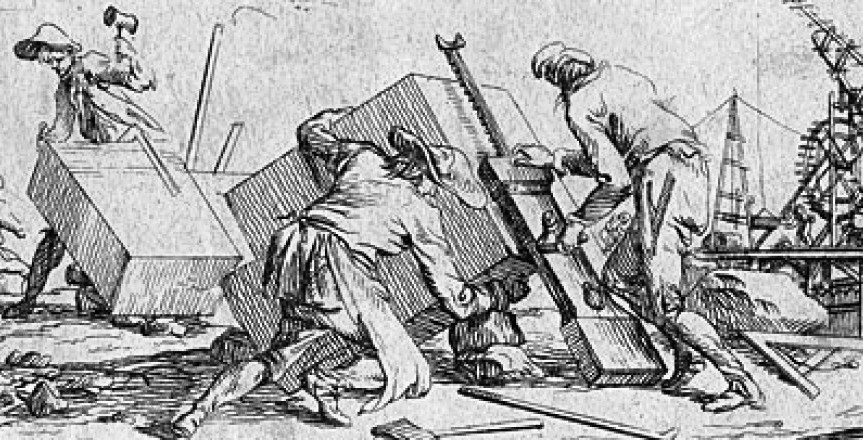
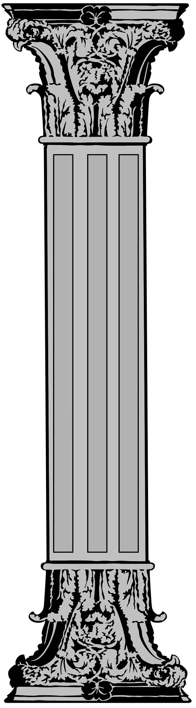
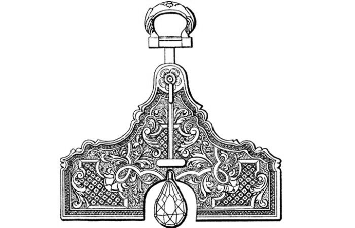
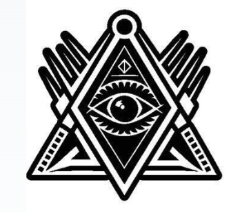
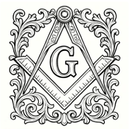

De Constructores de Piedra a Arquitectos del Ser
Antecedentes lejanos
Los antecedentes más lejanos de la Francmasonería se encuentran en los gremios de constructores operativos medievales (albañiles y canteros). Estos gremios crearon códigos de conducta, jerarquías (Aprendiz, Compañero, Maestro) y métodos de trabajo altamente desarrollados para edificar las grandes catedrales.


A medida que la necesidad de construir catedrales disminuyó, estos gremios comenzaron a invitar a hombres que no eran albañiles, sino pensadores y filósofos (aceptados o "especulativos"), que compartían sus ideales de progreso y conocimiento.
Este proceso se consolidó en 1717 con la creación de la Gran Logia de Londres, marcando el nacimiento de la Francmasonería Moderna. En este momento, la Orden dejó de lado las herramientas físicas y se centró en la construcción interior del individuo y la sociedad.
La escuadra mide la rectitud de nuestras acciones. El compás traza los límites de la razón. El nivel nos recuerda que todos los seres humanos somos iguales. Instrumentos que dejaron las obras de piedra para esculpir el alma humana.

El objetivo de la Masonería
La escuadra, el compás, el nivel — herramientas que dejaron de ser instrumentos de trabajo para convertirse en símbolos de conducta ética y búsqueda de la verdad. El objetivo de la Masonería es construir una Humanidad basada en tres grandes pilares:
Del pensamiento y la conciencia
De todos los seres humanos
Vínculo universal entre los pueblos
Para unir en una sola cadena fraternal a personas de procedencia, culturas y creencias distintas, la Masonería utiliza tradicionalmente un lenguaje simbólico. Su principal valor radica en su universalidad, lo que permite que sea comprendido e interpretado más allá de cualquier diferencia cultural o lingüística.
A través de su aspiración de mejorar al ser humano y a la sociedad, se enriquece con todos los conocimientos, esfuerzos y descubrimientos que la humanidad ha construido a lo largo del tiempo.

La Esencia

Resulta sorprendente, para cualquier espíritu observador, la persistencia de la institución masónica a través del tiempo, en lugares y culturas tan diferentes.
La institución está compuesta por hombres y mujeres de diversa procedencia, con costumbres y culturas distintas, quienes hablan lenguajes diversos y profesan variadas creencias. Ella reconoce y valora los aportes que realizan los seres humanos en la búsqueda del progreso material, moral e intelectual de la Humanidad.
La Francmasonería es Memoria Universal porque se ha vinculado con todos aquellos que, desde tiempos inmemoriales, se han interesado por conocer los orígenes del ser humano, su presente y su futuro.